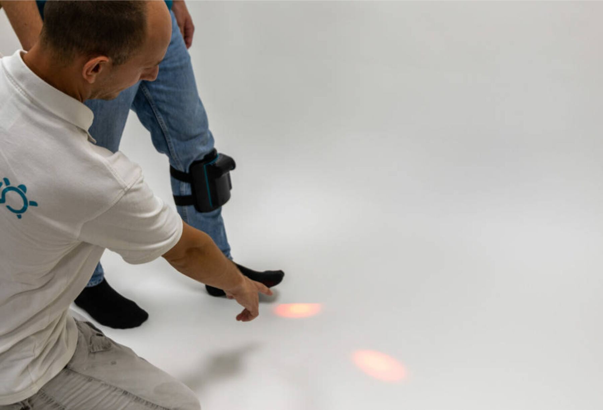
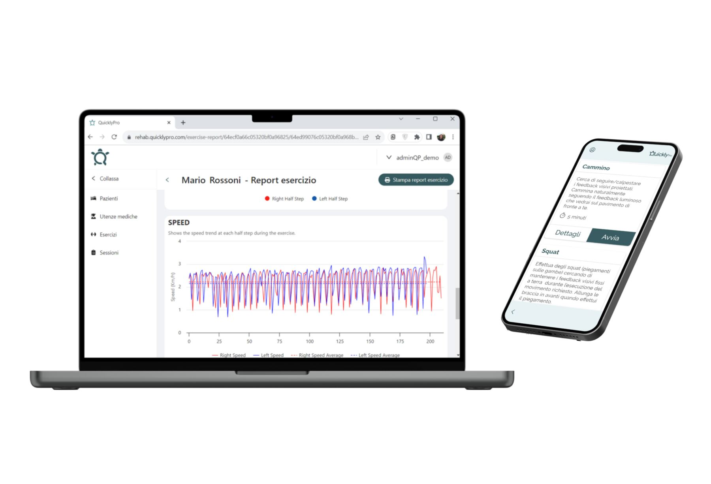
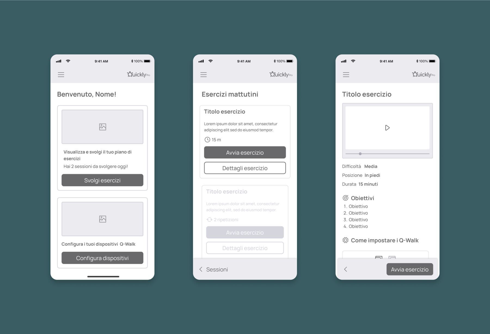
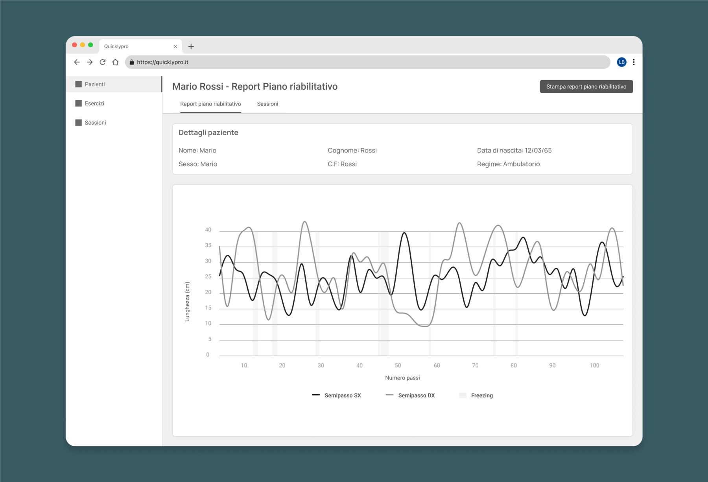

QuicklyPro
A tele-rehabilitation startup with a wearable for gait training. I designed the platform for clinicians and the app for patients, both certified medical devices.
UX/UI designer, via Mia-Platform: the QP-Rehab platform for clinicians and the QuicklyPro app for patients.
Two certified medical devices for clinicians and patients, connected to a wearable: interfaces that had to stay accessible and adaptable.
Designing certified medical devices taught me to keep every interface accessible and adaptable to each patient, with a truly patient-centred approach.

Light on the floor, one step at a time
Q-Walk is a wearable that projects visual cues on the ground to help patients with balance and safety while they walk. Clinicians set up a personalised plan in the platform or app; when an exercise starts, Q-Walk uses those settings to guide every step, alone or with a physiotherapist.

Designing for people who are learning to walk again.
One for clinicians, one for patients
- QP-Rehab, for clinicians: manage patients, create custom sessions, follow progress with charts, talk on video.
- QuicklyPro app, for patients and clinicians: a metronome for gait training, video visits, balance programmes, and the connection to Q-Walk.

Wireframes before pixels
Business goals first, then research, benchmarks and wireframes, then detailed UI and specs. Iterative, so each version got closer to what patients and clinicians actually needed.

